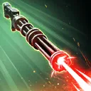
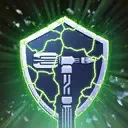

Moroff
A towering Gigoran heavy gunner who is a mercenary for hire
A towering Gigoran heavy gunner who is a mercenary for hire

Deal Physical damage to target enemy. If the ally in the Leader slot is Saw Gerrera, he assists (once per turn), dealing 50% more damage. If the target has Explosive Trap, Rebel Fighter allies gain 10% Max Health (stacking, max 50%) until the end of battle.
During Moroff's turn, if the target is Burning, this attack deals an additional instance of True damage equal to 15% of Moroff's Max Health (excluding Galactic Legends), and Rebel Fighter allies gain 10% Turn Meter.
Deal Physical damage to all enemies and deal an additional instance of True damage equal to 10% of Moroff's Max Health (excluding Galactic Legends) to enemies with Resilient Defense or Taunt.
Rebel Fighter allies gain 20% Offense (stacking, max 100%) for the rest of the encounter and Potency Up for 2 turns. If Saw Gerrera is an ally, Rebel Fighter allies also gain Protection Up (20%) for 2 turns.

Deal Physical damage and inflict Healing Immunity on target enemy for 2 turns. Moroff recovers 35% Health and gains 20% Max Health (stacking, max 80%) for the rest of the encounter. Rebel Fighter allies gain 20% Turn Meter.
If the target enemy is a non-Galactic Legend Tank:
- They lose 50% Defense for 2 turns
- -30% Max Protection until the end of the encounter
- Moroff deals an additional instance of True damage equal to 30% of Moroff's Max Health to them
At the start of battle, Moroff gains 20% Max Health and Offense until the end of battle. If the ally in the Leader slot is Saw Gerrera, he also gains 20% Max Health and Offense until the end of battle.
Whenever a Rebel Fighter ally gains Heal Over Time, Moroff gains 10% Turn Meter (once per turn). Whenever an enemy Taunts, Rebel Fighter allies gain Defense Penetration Up and Offense Up for 1 turn.
If neither Luthen Rael nor Mon Mothma are present as an ally: Rebel Fighter allies gain 15% Max Health and Tenacity until the end of battle. At the start of Moroff's turn, he gains 25% Health Steal (stacking, max 250%) and Potency (stacking, max 250%) until the end of battle. Whenever Moroff uses a Special ability, dispel all debuffs on himself. If any debuff was dispelled, deal True damage equal to 5% of Moroff's Max Health (excluding Galactic Legends) to target enemy and deal an additional instance of True damage equal to 5% of Moroff's Max Health (excluding Galactic Legends) for each debuff dispelled this way. Whenever Explosive Trap detonates, reduce the cooldown for Moroff's Gigoran Onslaught by 1.
Omicron Boost : While in 3v3 Grand Arenas: At the start of battle, Rebel Fighter allies gain 25% Potency and 25 Speed until the end of battle. If there are no Galactic Legends, whenever a Rebel Fighter ally is attacked by an enemy with Explosive Trap, they gain Offense Up for 1 turn and deal True damage equal to 5% of their Max Health. The first time Moroff would be defeated, Moroff instead survives with 1% Health, his cooldowns are reset, and he gains Damage Immunity for 1 turn.
If there are no Galactic Legends, Gigoran Onslaught also applies to a Support or Leader and Rebel Fighter allies recover Health equal to 35% of Moroff's Max Health. If target enemy is defeated by Gigoran Onslaught they can't be revived, and Moroff gains a bonus turn.